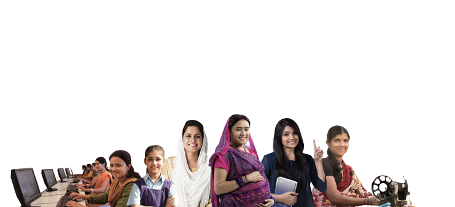

<div class="container">
  <div class="hero-section">
    <div class="info">
      <h1>MINISTRY OF WOMEN & CHILD DEVELOPMENT</h1>
      <p>
        The Ministry of Women and Child Development, a branch of the Government
        of India, is an apex body for formulation and administration of the
        rules and regulations and laws relating to women and child development
        in India. The current minister for the Ministry of Women and Child
        Development is Smriti Irani having held the portfolio since 31 May 2019.
      </p>
    </div>

    <div class="image">
      
    </div>
  </div>
</div>
